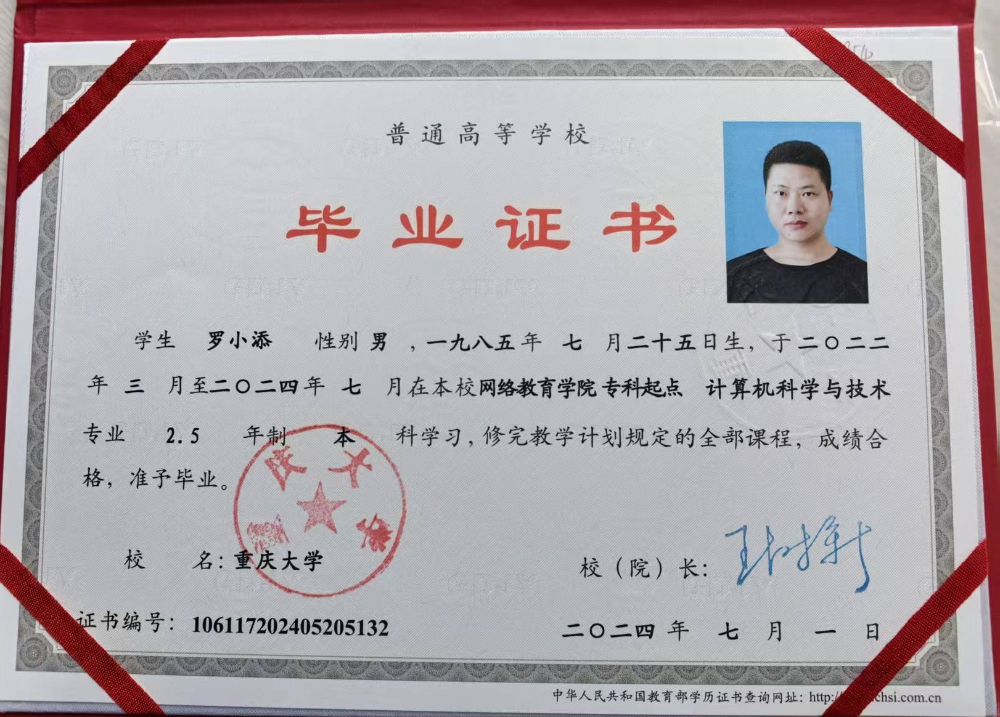
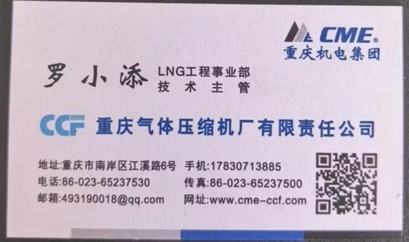
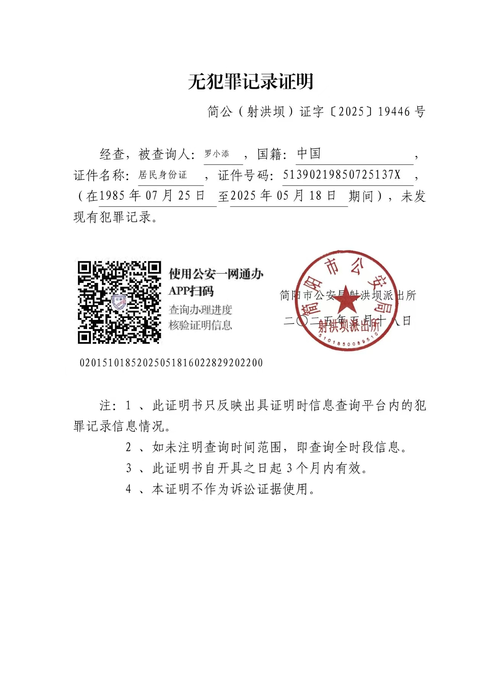

关于我

罗小添
上位机开发工程师 | MES系统专家
17年以上软件开发经验 | 9年+工控上位机开发 | 本科
核心优势
9年+工控上位机开发经验：精通C#/.NET/WinForm/WPF，熟练掌握Modbus/OPC UA/S7/SECS/GEM等工业协议，主导过多行业SCADA系统与MES模块开发，具备独立项目全流程落地能力。
编程语言：精通C#，熟练掌握面向对象开发、多线程异步编程，具备设计模式（MVVM/单例等）实战应用经验。
开发框架：深耕.NET Framework/.NET Core/.NET 8，熟练运用WinForm/WPF开发工业级客户端，精通Prism框架、数据绑定、依赖注入等WPF核心技术。
MES系统：主导半导体光模块MES在制品工序管控模块开发与落地，具备MES全流程管控经验。
技术专长
项目经验亮点
半导体MES系统：主导新工厂10条产线光模块MES系统开发，支撑日产10k+产品，MES系统运行稳定率超过99.8%。
加气机研发管理：作为项目经理带领8人团队完成加气机自动化控制系统研发，获得国家安全技术认证和计量器具型式批准证书。
工业自动化系统：开发多套上位机控制系统和SCADA监控系统，应用于能源、轨道交通等多个行业。
资质证书




职业目标
希望从事上位机开发、工厂MES系统管理相关工作，或担任IT主管负责技术团队管理和信息化建设。16年深耕工业自动化领域，具备丰富的MES系统开发管理经验、上位机开发能力和团队管理经验，期待为制造企业的数字化转型贡献力量。
技术功底扎实，工程实践经验丰富，具备 MES 系统开发与 SECS/GEM 协议实战经验，深度匹配半导体、电子制造等行业的岗位需求，可快速适配上位机开发、MES系统管理、IT管理等岗位。
自我评价
具备良好的逻辑分析、沟通协调与快速学习能力，责任心强、主动性突出，拥有优秀的团队合作精神与抗压能力。熟悉软件工程规范，具有丰富的项目管理和团队管理经验，可高效带领技术团队推进项目落地，为企业创造价值。